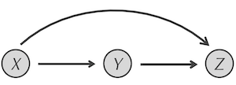

The Feedforward Loop Motif
Feedforward loops
In the previous section, we saw that negative autoregulation can be used to speed up the response time of a protein to an external stimulus. The catch is that negative autoregulation can only be used if the protein is itself a transcription factor. Only about 300 out of 4,400 total E. coli proteins are transcription factors1. Is there a simple way of speeding up a cell’s ability to manufacture a protein if that protein is not a transcription factor?
The answer will lie in another small network motif called the feedforward loop (FFL). The FFL motif, shown in the figure below, is a network substructure in which X is connected to both Y and Z, and Y is connected to Z. In this sense, calling the FFL motif a “loop” is a misnomer. Rather, it is a small structure in which there are two “paths” from X to Z; one via direct regulation of Z by X, and another in which there is an intermediate transcription factor Y. This is why this motif is called feedforward rather than feedback.
 The FFL motif. X regulates both Y and Z, and Y regulates Z.
Note that X and Y must be transcription factors because they have edges leading out from them, but Z does not have to be a transcription factor (and in fact typically is not). There are 42 FFLs in the transcription factor network of E. coli2, and we will pass the verification that this is a significant number of FFLs as an exercise at the end of the module.
Furthermore, recall that every edge of a transcription factor network is assigned a “+” or a “-“ sign based on whether the interaction corresponds to activation or repression, respectively. Accordingly, there are eight different types of FFLs, depending on the labels of the three edges in this motif.
Among the 42 total FFLs in the E. coli transcription factor network, five of them have the structure below, in which the edges connecting X to Y and X to Z are assigned a “+” and the edge connecting Y to Z is assigned a “-“. This specific form of the FFL motif is called a type-1 incoherent feedforward loop. This form of the FFL will be our focus for the rest of the module.
STOP: How could we simulate a feedforward loop with chemical reactions akin to the simulation that we used for negative autoregulation? What would we compare this simulation against?
 The incoherent feed-forward loop network motif. Note that X upregulates Y and Z, while Y downregulates Z.
The incoherent feed-forward loop network motif. Note that X upregulates Y and Z, while Y downregulates Z.
Modeling a type-1 incoherent feedforward loop
As we did in the last section, we will run two simulations. In the first, we will have a simple activation of Z by X, meaning that we will assume X is at its steady state concentration and that Z is produced by the reaction X → X + Z and removed by the reaction Z → NULL.
The second simulation will include both of these reactions, but we will also have the reaction X → X + Y to model the upregulation of Y by X, along with the reaction Y + Z → Y to model the repression of Z by Y. Because Y and Z are being produced from a reaction, we will also have kill reactions for Y and Z to model the degradation of these two proteins. For the sake of fairness, we will use the same degradation rates for both Y and Z.
Furthermore, in order to obtain a mathematically controlled comparison, we will need to make the reaction X → X + Z have a higher rate in the second simulation that models the FFL. If we do not raise the rate of this reaction, then the repression of Z by Y will cause the steady state concentration of Z to be lower in the second simulation.
If you are feeling adventurous, then you may like to adapt the NAR tutorial to run the above two simulations and tweak the rate of the X → X + Z reaction to see if you can obtain the same steady state concentration of Z in the two simulations. We also provide the following tutorial guiding you through setting up these simulations, which we will interpret in the next section.
Why feedforward loops speed up response times
The figure below shows a plot visualizing the amount of Z across the two simulations. As with negative autoregulation, we see that the type-1 incoherent FFL allows the cell to ramp up production of a gene Z much faster than it would under simple regulation.
 The concentration of Z in the two simulations referenced in the main text. Simple activation of Z by X is shown in blue, and the type-1 incoherent FFL is shown in purple.
The concentration of Z in the two simulations referenced in the main text. Simple activation of Z by X is shown in blue, and the type-1 incoherent FFL is shown in purple.
However, you will note a slightly different pattern to the growth of Z than we saw under negative autoregulation. In negative autoregulation, the concentration of the protein approached steady state from below. In the case of the FFL, the concentration of Z grows so quickly that it passes its steady state and then returns to steady state from above.
We can interpret from the model why the FFL allows for a fast response time as well as why it initially passes the steady state concentration. At the start of the simulation, Z is activated by X very quickly. X regulates the production of Y as well, but at a lower rate than the regulation of Z because Y only has its own degradation to slow this process. Therefore, more Z is initially produced than Y, which causes the concentration of Z to shoot past its eventual steady state.
The more Y we have, and the more Z that we have, the more often the reaction Y + Z → Y will occur. Because the concentrations of both Y and Z increase over time, this reaction serves as the “brakes” for the concentration of Z. These brakes need to be very powerful, meaning that the rate of the reaction Y + Z → Y needs to be very high, in order to decrease the concentration of Z to its steady state.
Damped oscillations give us hope of building a biological oscillator
The feedforward process must be vital to the cell. Unlike negative autoregulation of a single transcription factor, the FFL requires two separate transcription factors working together in order to increase the production of our target gene. This higher evolutionary cost of implementation may help account for why it is more rare than a negatively autoregulating transcription factor.
We only considered one of the eight types of FFL in this lesson. You might wonder whether any of the other seven FFL structures serve as network motifs. For example, what happens if X activates Z, X represses Y, and Y activates Z? We will explore these additional FFL structures in the exercises at the end of the module.
Finally, recall the figure above, in which the concentration of Z swung past its steady state before returning to the steady state. This figure is reminiscent of a damped oscillation process in which the concentration of a particle alternates between being above and below its steady state, while the amplitude of the oscillation gets smaller and smaller.
 In a damped oscillation, the value of some variable (shown on the y-axis) back and forth around an asymptotic value while the amplitude of the oscillations decreases.3
In a damped oscillation, the value of some variable (shown on the y-axis) back and forth around an asymptotic value while the amplitude of the oscillations decreases.3
In a true oscillation process, the concentration of the particle is not damped, and this concentration alternates with regularity between a minimum and maximum value. Oscillations are common-place in nature and remarkable because the oscillating behavior arises from the system and can be maintained without outside influence. But can oscillations be explained by transcription factor network motifs? We hope you will join us in the next lesson to find out.
-
Gene ontology database with “transcription” keyword: https://www.uniprot.org/. ↩
-
Mangan, S., & Alon, U. (2003). Structure and function of the feed-forward loop network motif. Proceedings of the National Academy of Sciences of the United States of America, 100(21), 11980–11985. https://doi.org/10.1073/pnas.2133841100 ↩
-
https://www.toppr.com/guides/physics/oscillations/damped-simple-harmonic-motion/ ↩